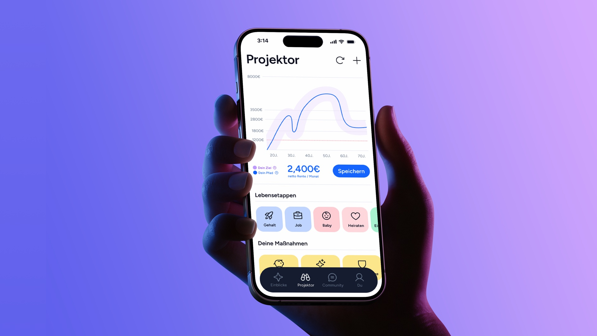
māter
Financial clarity. Built for confidence.
Overview
A master project exploring the intersection of behavioral design and economic modeling to transform women's financial anxiety into confident action.
Reframing the Challenge
Structural realities in Germany—like the 18% gender pay gap and a 46% part-time work rate—result in a 49% average pension deficit for women. Driven by unpaid care work and systemic opacity, this leaves women highly vulnerable to old-age poverty.
While a digital product cannot fix these socio-economic structures overnight, it can solve the immediate hurdle. I focused the strategy on the "Psychological Gap". By targeting a 50% knowledge deficit and a 38% trust gap, the goal is to replace "Financial Imposter Syndrome" with actionable clarity and confidence.
The Structural Gap
The Psychological Gap
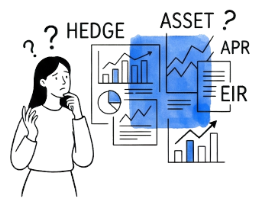
Knowledge Void
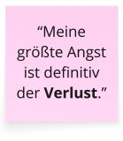
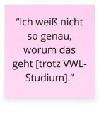
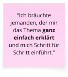
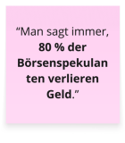
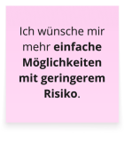
Uncovering the Trust Gap
I conducted 6 qualitative interviews with a diverse group of analytical users, ranging from economics students to financial columnists, to observe financial decisions and evaluate why existing tools fail to support them.
Despite high analytical capability, participants found existing platforms exclusive and exhausting. The real barrier was never a lack of financial literacy, but a profound trust gap created by interfaces prioritizing algorithmic complexity over human clarity.
This finding directly shaped the design mandate: closing this gap required an approachable visual foundation, transparent mental models, and dialogue rooted in psychological safety.

Building the Visual Foundation
Inspired by the Latin word for “mother”, māter provides a supportive foundation for financial independence. The geometric logo’s ascending lines symbolize the continuous growth of knowledge and trust.
To make complex data approachable, I paired the highly legible Figtree typeface with a strategic color palette. Avoiding gender clichés, I used a de-escalating Blue to calm anxiety and Digital Purple for a modern tech feel—all structured on Tailwind CSS v4 for seamless handoff.
To bridge the emotional trust gap, I introduced Sparky. As the app’s digital mentor, this character makes complex topics accessible through friendly, non-judgmental dialogue.
Before
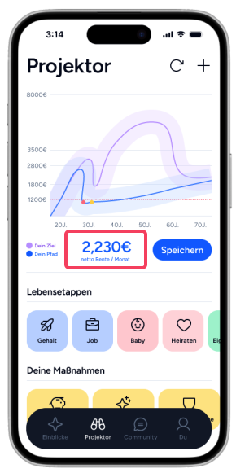
Iterating for Transparency
Moving from initial wireframes to interactive prototypes, I validated core user paths through hands on testing. While the general structure felt smooth, participants felt skeptical about the "black box" nature of financial projections, frequently questioning how figures were calculated.
To resolve this friction, I introduced contextual slide up overlays directly disclosing underlying calculation parameters. As shown across the before and after states, this shift transformed raw algorithmic output into understandable logic, significantly boosting perceived validity and user confidence.
After
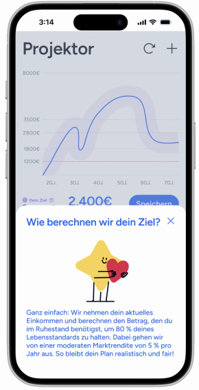
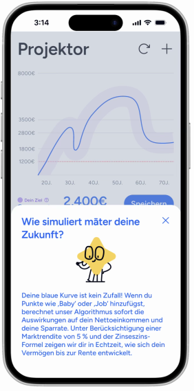

Lowering the Barrier to Action
To reduce the psychological threshold immediately, I introduced an optional Guest Mode, allowing users to explore the app without mandatory registration, building trust from the very first second.
This is followed by a Sparky-guided onboarding that captures three core parameters: birth year, life situation, and profession. These inputs enable a precise algorithmic calibration of the user's personal starting point, replacing uncertainty with immediate clarity and a sense of ownership over their financial future.
Lowering the Barrier to Action
To reduce the psychological threshold immediately, I introduced an optional Guest Mode, allowing users to explore the app without mandatory registration, building trust from the very first second.
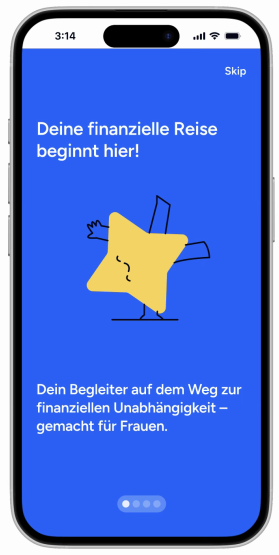
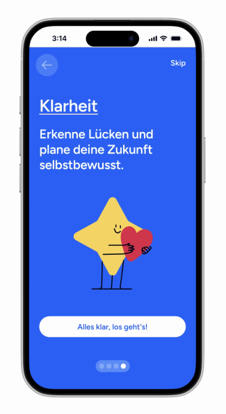
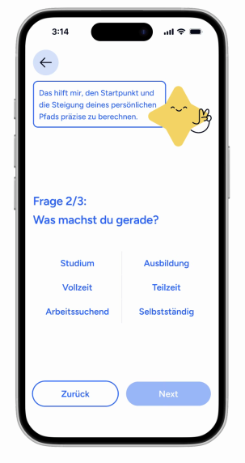

A key innovation is the adaptive language toggle, allowing users to switch seamlessly between everyday language and professional terminology. By translating complex facts into narrative storytelling, the system minimizes cognitive load, giving users full control over their learning pace and building long-term financial agency.
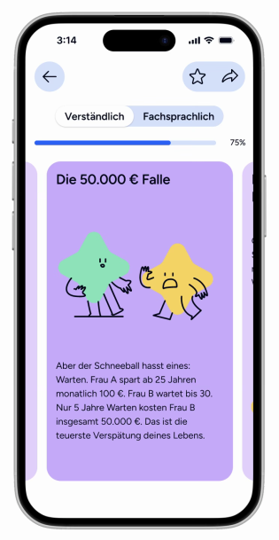
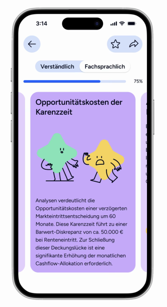
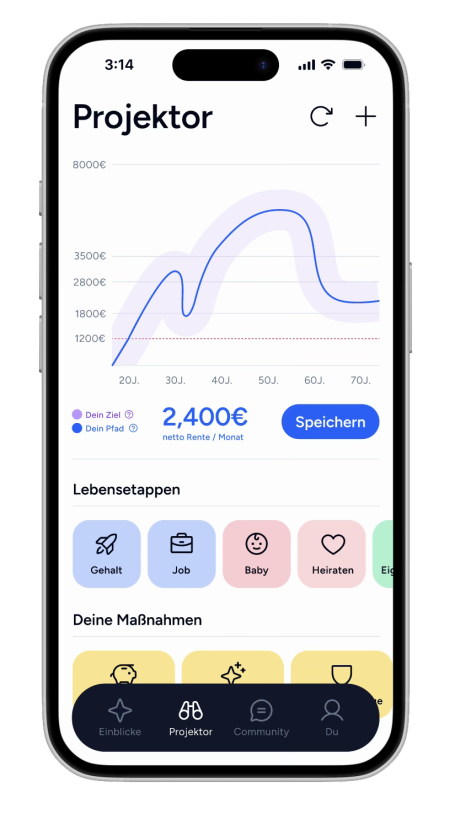
Projecting the Future
I deliberately named the core feature the "Projector" rather than a "Prognosis" to emphasize active user control. Here, users can map their pension path by selecting specific life stages. To establish absolute trust, the tool prioritizes algorithmic transparency—using Sparky to openly disclose the underlying calculation logic and market data.
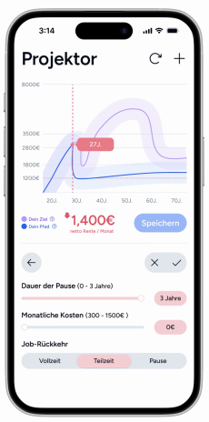
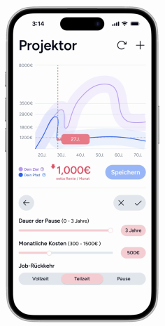
Acting as an interactive sandbox, the Projector lets users adjust variables like parental leave or savings rates via sliders to see the real-time visual impact of their choices. This immediate feedback loop makes complex financial causalities tangible, empowering users to confidently compare scenarios and take charge of their future.
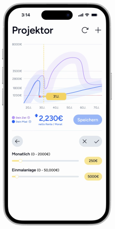
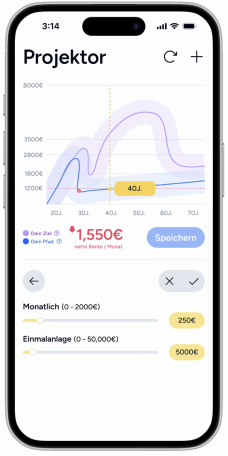
Designing for Conversion
To lower entry barriers, I implemented a Delayed Registration strategy. Users can explore the app friction-free until they click "Save". By allowing them to experience real upfront value before asking for a sign-up, Sparky steps in naturally to secure their progress. This approach minimizes the psychological threshold and significantly boosts conversion.
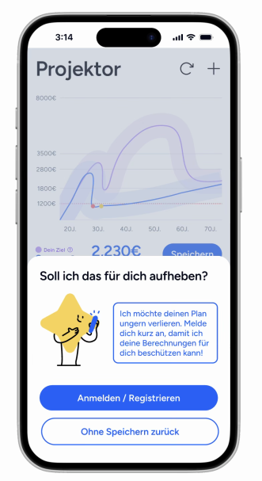
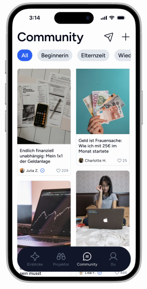
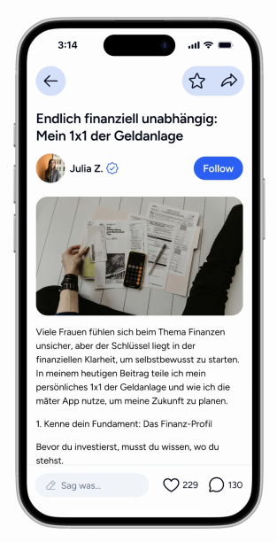
Designing for Monetization
To secure long term viability, māter introduces a monetization layer connecting users with verified financial experts. As shown in the expert feed, certified professionals publish educational blueprints, offer direct advisory sessions, and introduce curated financial solutions. This establishes a transparent revenue sharing model that monetizes deep financial intent while keeping the core simulation accessible to all.
Lessons learned
1. Design as a Trust Anchor
I learned that design in FinTech goes far beyond aesthetics. It is a strategic tool used to build transparency and translate financial anxiety into proactive action.
2. Empathy Meets Logic
The greatest challenge was balancing macroeconomic logic with emotional user needs. This project reinforced that a successful product must serve both dimensions synchronously.
3. The Human-AI Synergy
Integrating AI into my workflow was a game-changer. It taught me a vital lesson: AI amplifies strategic depth and efficiency, but human empathy must always dictate the design direction.